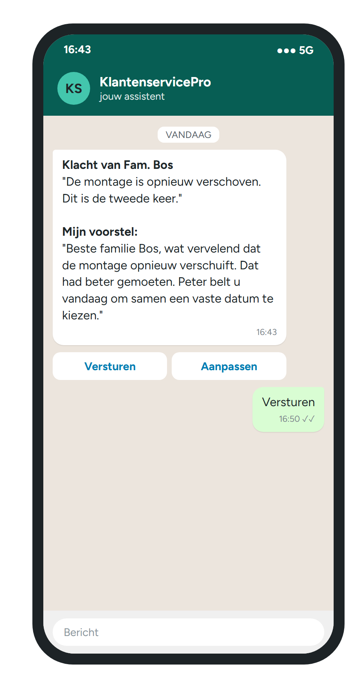

KlantenservicePro
Zelf een antwoord bedenken
Na een lange werkdag
Klacht gaat eerst naar jou
Met een conceptantwoord
Bij een klacht beslis jij.

VOORBEELDJe klant blijft geholpen
Veelvoorkomende vragen beantwoordt de dienst zelf, op basis van jouw bedrijfsinformatie.
Met conceptantwoord. Jij beslist.